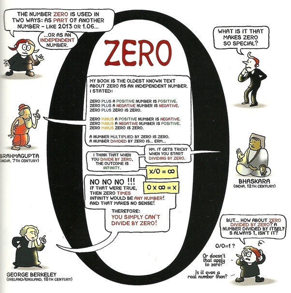

Null
Selv om folk alltid har forstått begrepet ingenting eller ikke har noe, er begrepet null relativt nytt; Det er fullt utviklet i India rundt det femte århundre A.D., kanskje et par århundrer tidligere. Først da matte matematikere seg for å utføre de enkleste aritmetiske beregningene. I dag, null - både som et symbol (eller tall) og et konsept som betyr fravær av noen mengde - lar oss utføre kalkulator, gjøre kompliserte likninger og ha oppfunnet datamaskiner.
